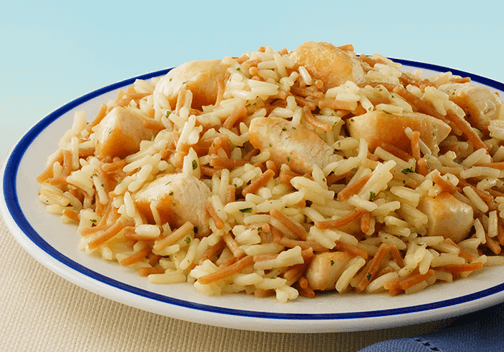

Homemade Rice-A-Roni

Description
This is an improved version of Rice-A-Roni made from scratch with leftover rotisserie chicken.
Ingredients
- 1 tablespoon butter
- 1 cup white rice
- 1/4 cup broken pieces vermicelli pasta
- 3 cups water
- 1 tablespoon chicken bouillon paste
- 2 teaspoons dried parsley
- 1 clove garlic minced
- 1/2 teaspoon onion powder
- 1/4 teaspoon tumeric
- 11/4 teaspoon cinnamon
Steps
- Melt butter in a large saucepan over medium heat.
- Cook rice and vermicelli in hot butter until browned, about 3 minutes.
- Pour water over the rice mixture.
- Stir chicken bouillon, parsley, garlic powder, and onion powder into the water and bring to a boil.
- Place a cover on the saucepan, reduce heat to low, and cook until the water has absorbed into the rice and pasta, about 25 minutes.
Nutrition
- Calories: 223 kcal
- Total Carbohydrates: 42.4g
- Cholesterol: 8 mg
- Total Fat: 3.6 g
- Protein: 4.5 g
- Sodium: 311 mg